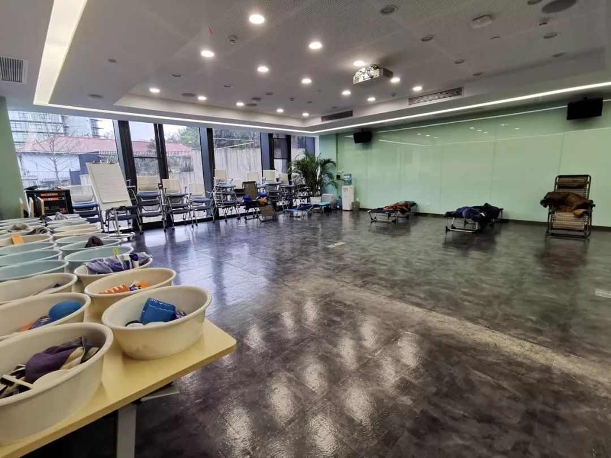

没错，我就是个做口罩的
原文链接 备份链接 “ - 疫 情 之 下 - 她们加班加点的多生产一片，老百姓就少一份因为口罩紧缺带来的恐慌；多生产一片，政府部门的抗疫情压力就会减轻一份；多生产一片，人与人之间就多了一个传递守护和关心的桥梁。 ” 1 作为一个只有79 …

「健康码」可能是支付宝历史上开发时间最短、上线最快的超级项目。从支持杭州余杭区开发团队推出全国首个「健康码」到浙江省版、四川省版、海南省版、重庆版……只用了七八天。
这个涉及数亿亟待复工的中国人的健康码，背后是一群戴着口罩的程序员、产品经理、运营……他们像迎战「双11」一样住进了杭州作战室，还有更多散布各地的人在田间地头、隔离小区里云加班，还有人为了在停电时正常开电话会议，自己发电。
文***｜*******桃子
最早一批复工的人
这些天来，杭州著名的西溪路一片寂静。这里不仅是支付宝总部所在地，还遍布大大小小创业公司，被戏称为「东半球加班中心」。往日的「加班中心」昼夜灯火通明，如今漆黑一片，没有人影。
但城壁和他的同事们是个例外。他们摸进公司对面的创投中心，检查入园证明、量体温、领口罩、酒精消毒……几十名程序员一声不吭穿越重重关卡，进入位于二楼的支付宝非常时期临时作战室。
口罩背后的人并不彼此认识。他们来自支付宝不同部门，技术、产品、运营、法务、客服……共同的任务是在最短时间里，让健康码在浙江全省上线。
城壁是支付宝资深技术专家，健康码项目技术一号位，这位工龄15年的老阿里，经历过无数次紧张有序的重大技术迭代，但这次是头一回，「只能顾上下一分钟」。
疫情告急以来，雷神山和火神山星夜施工，各地医疗队火速集结，抗疫战局对时效的要求是空前的。眼下全国即将迎来复工潮，各地返程人员形成了抗击疫情中新的风险。为了实现安全高效复工，2月11日，杭州健康码上线当天，浙江要求全省推广健康码，而且要「立刻马上全省都上」。
此前，最先推出的杭州余杭区健康码已经推行了几天，成功将传统的手写登记人员流动的方式换成了线上打卡，各方反响很好。
城壁本想让大家休息几天，不料随即接到上线浙江码的任务，并且是要到线下集中攻坚。
但非常时期，大多数人都在外地，回杭州还要先在家隔离14天，办法只有一个，发动在杭州呆满14天且身体健康的技术报名。凌晨两点，建群拉人报名，凌晨两点半，报名人数达几十个。
进作战室后，城壁看到了范禹，一位技术出身的阿里合伙人。范禹在作战室里坐了一夜，调人调资源。越来越多来自阿里云、钉钉的隔壁兄弟加入进来，并肩作战。
这支临时军团按照两班倒的方式昼夜值班，24小时无休。杭州还在封小区，他们已经看过了凌晨4点的西溪路。

行军床上的程序员
「作战室」按往年「双11」指挥中心的样子收拾了出来，走廊上摆满水果零食，靠墙是一溜摆好了牙刷、牙膏、洗发水、沐浴露的小脸盆，行军床也全部就位。
不过，这次的「作战室」没有往常的人头攒动，上千平米的办公空间，只有寥寥几十人。工作时众人热火朝天，忙得像证券交易所；吃饭时每个人单独坐一张办公桌，面朝同一方向，埋头不语。既要效率，又得安全。
自从浙江推广健康码后，越来越多省市找上门来。情人节晚上，大家正在紧张测试浙江省健康码，突然收到第二天上线四川版健康码的通知，同时还要开发全国版健康码系统……
城壁每次都以为干完这票就完了，没想到从突击战变成了持久战。
行政同学原本想增加几张行军床，但发现原本准备的床没怎么动过。一问才知道，为了赶时间，几乎所有人都是不眠不休，甚至有人连续干两天，然后回家洗洗睡一觉再来。

2月18日，杭州市委书记周江勇来作战室慰问大家，就是在这间堆满牙膏牙刷脸巾面盆的休息室里。
用得最多的是行政提前准备好的毛巾。撑不住了，用热水把毛巾打热，敷在眼睛上。
「抗疫情最需要有一个本地动态实时地图，健康、疑似、确诊，市民自己申报健康信息并实施更新，这靠纸做的路条是办不到的，得靠数字化办法。」健康码项目经理，支付宝高级项目管理专家易治说，纸路条是一个个孤岛，且只能证明你此时此刻的状态，但健康码是动态的，依据政府制定的标准，用户在健康打卡申报信息后，将各自领取到一张码，这张码随着用户自己每天的状况提交，所处区域的变化、健康状况等因素，会发生相应的变化。比如按照杭州的规则，当地黄码用户在连续7天居家隔离并健康打卡，没有任何不适症状后，就会转变为绿码。「这样的动态管理大大降低了政府的战疫成本」。
大量的协同需求、信息交流让「作战室」24小时充满电话会议，视频电话、钉钉电话从不间断，所有人的手机和电脑都时刻保持充电状态。
说话太多，口罩很容易被弄湿，大家不得不一边对着电脑、手机滔滔不绝，一边努力摁住摘下口罩的冲动。
大家电脑右上方显示的会议时间，大多是两小时以上，因为还有上百名无法返回公司的同事在各自家中云办公。各种电话会议里，时不时传来娃啼狗吠鸡鸣猪唤。
对于民生政务组的同学来说，即便赢驷不说话，同事们也知道他在线——听筒里不断传来隔壁邻居家的狗叫声。20多天没能下楼，三条狗都快憋疯了。
赢驷是支付宝业务发展专家，自从1月20号和妻子一起回到武汉之后，他就窝在岳父母家没有出过门。10个月大的孩子醒着时喜欢在客厅玩，他乖乖躲到阳台办公；孩子睡着时需要安静，他就被撵到距离卧室最远的厨房打电话。
在争分夺秒的工作中途，他的手机闹钟会突然响起：各种app抢菜时间到了。赢驷抢菜成功率不高，从大年初三开始，全家从一日三餐改为两餐。比这更让人紧张的是，他们居住的小区里有近百例疑似和确诊患者，距离最近的确诊病人，就是住在正对面的邻居。
2月17日中午，如火如荼的会议持续到赢驷被家里领导拔下耳机，摁上静音——「你也知道买菜不方便？家里只有两颗大白菜六颗小白菜了，还不想办法赶紧再抢一点！」
这是迄今为止赢驷最幸运的一单，在盒马上抢到的。
衣柜里的产品经理
宝妍大年初四就开始切换入工作模式了。她是支付宝资深产品专家，在回家路上看到，因为疫情的影响，各地高速收费站设立关卡，工作人员戴着口罩、护目镜、穿着防护服，逐车地登记流动人员的健康及迁移数据。
被堵在返乡车流中的产品经理们将沿途见闻发到钉钉工作群里，开始讨论，有没有可能把登记工作变成在线填报，那样效率会高不少。
大年初四，散落在天南海北的同事们开始远程在线合作，很快搭建出一个简单的模型：电子健康卡。有了健康卡，就可以在支付宝上实现填报，不需要「人肉」线下登记。
回老家远程协作，各有各的画风。
有人老家在西北山区，屋里没有信号，院里才有信号。在冰霜寒风中，为了不当冰雕，每天起来都得先劈柴，再生火，烧旺了，才开机。
有人乡下电力供应不稳，老屋忽然停电，电脑很快没电时，硬核爷爷向邻居借来了发电机。老人家十分骄傲：孙女商量起工作来，你们听都听不懂的。
有人家里网络不稳定，举着电脑满屋转下来，发现衣柜里信号最好，于是毫不犹豫在衣柜里支了个电脑桌。
大年初七，健康卡完成了产品设计Demo。
正月十七，全国陆续复工在即，初版健康卡产品完成。
彼时，杭州健康码已经发放了几天，全国网友求借一用在网络上被花式玩成了梗。
2月10日，在初版健康卡产品完成这天，宝妍接到了全员all in上线浙江省健康码的任务，她回复主管：产品同学已经做好准备。
于是就有了接下来的，
2月16日凌晨3点，四川版上线；
2月16日晚7点30分，浙江版上线；
2月16日晚8点，全国码启动研发；
2月18日上午10点，海南版上线；
2月19日下午3点，重庆版上线；
……
没看够？
长按二维码关注《人物》微信公号
更多精彩的故事在等着你

原文链接 备份链接 “ - 疫 情 之 下 - 她们加班加点的多生产一片，老百姓就少一份因为口罩紧缺带来的恐慌；多生产一片，政府部门的抗疫情压力就会减轻一份；多生产一片，人与人之间就多了一个传递守护和关心的桥梁。 ” 1 作为一个只有79 …
原文链接 备份链接 本报记者 张家振 北京报道 江苏省宜兴市某企业采购员刘缘（化名）通过网络向一名异地供货商采购8万只口罩，不料在足额缴纳货款后，陷入了“财货两空”的境地。 宜兴市公安局经多日缜密侦查，“逆行”千里最终在2月14日将身居 …
原文链接 备份链接 澎湃新闻记者 邹娟 “终于可以解禁了！”2月16日，在上海自贸区上班的沈蔚明在朋友圈写下这句话，并配上一排笑脸表情。 沈蔚明是公司项目主管，自从2月3日从老家回到上海，沈蔚明已经在公司安排的人才公寓自我隔离了14天，2 …
原文链接 备份链接 封面报道之产业篇： 荆门：消毒剂企业难复工 | 神农架：10名患者现林区 | 十堰：“东风城”亟待开工 1月3日新冠肺炎确诊患者44例的时候，湖北仙桃市口罩厂的老板李力总觉得会有事发生。此前，他已经在网上看到非典在武汉 …
原文链接 备份链接 面对依然紧张的防疫形势，上海的街道、居民区、楼宇不断放出防疫大招，以上海人特有的智慧筑起“上海堡垒”，守卫这座城市。 文 | 陈 冰 2月10日是上海正式意义上的“复工日”，在经历了一个史无前例安静春节之后，人员返程、 …